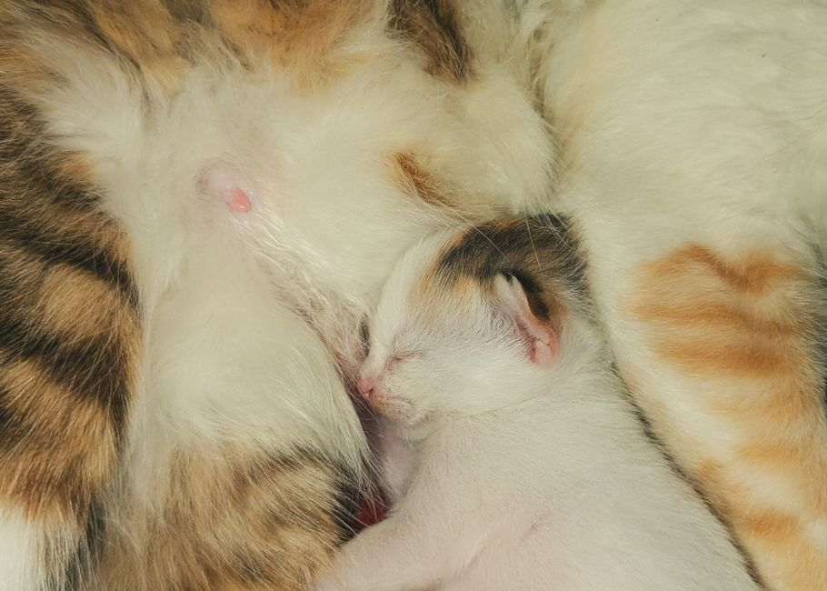

Les aliments adaptés pour une alimentation équilibrée de votre nouvel animal

Photo: Shuvo Chandro / Pexels
Introduction à une alimentation équilibrée pour votre nouvel animal
Bienvenue dans votre nouveau rôle de gardien d’un nouvel animal à la maison. Un alimentation équilibrée est cruciale pour le maintien de la santé et du bien-être de votre nouvel ami. Cependant, choisir les aliments appropriés peut parfois être un défi, surtout si vous ne connaissez pas encore ses besoins nutritionnels. Voici quelques conseils pratiques pour vous aider à élaborer un plan alimentaire adapté à votre nouvel animal.
Comprendre les besoins nutritionnels de votre animal

Photo: Andrew Kota / Pexels
Avant de commencer, il est essentiel de comprendre quel type d’animal vous avez adopté. Chaque espèce a des besoins nutritionnels uniques. Par exemple, les chiens ont besoin d'une alimentation riche en protéines, tandis que les chats ont besoin d'un acide arachidonyl, un acide gras qui n’est pas produit par le corps des chats.
- Chiens : Leur alimentation devrait être équilibrée, avec une forte proportion de protéines animales et des vitamines et minéraux. Ils ont besoin de glucides, de protéines, de graisses, de vitamines et de minéraux.
- Chats : Les chats sont des carnivores, et leur alimentation devrait refléter cette exigence. Les aliments pour chats doivent contenir de la taurine, un acide gras essentiel.
Consulter un vétérinaire
Avant de faire tout changement dans l'alimentation de votre nouvel animal, il est recommandé de consulter un vétérinaire. Un professionnel peut vous guider sur les besoins nutritionnels spécifiques de votre animal, ainsi que sur la transition vers une nouvelle alimentation si nécessaire.
- Programme de visite : Planifiez une visite régulière chez le vétérinaire pour surveiller la santé de votre animal et ajuster la nutrition si nécessaire.
Évitez les aliments qui pourraient être toxiques
Certaines substances courantes pour les humains peuvent être toxiques pour les animaux. Par exemple, l'aspartame, les noix de coco, et le chocolat sont interdits pour les chiens et les chats. Il est important de connaître ces dangers avant d'ouvrir un tiroir de la cuisine.
- Liste de surveillance : Créez une liste des aliments à éviter et placez-la dans une zone visible à la maison, pour rappel chaque fois que vous entrez dans la cuisine.
Transition douce vers une nouvelle alimentation
Si vous décidez de changer l'alimentation de votre animal, faites-le de manière progressive. Cela permet d'éviter les changements brusques qui pourraient provoquer des troubles digestifs.
- Mélangez doucement : Commencez à mélanger une petite quantité de la nouvelle alimentation avec l'ancienne. Augmentez progressivement la quantité de la nouvelle alimentation sur plusieurs semaines.
Fournir une gamme d'aliments
Pour maintenir une alimentation équilibrée, diversifiez les aliments que vous donnez à votre animal. Cela permet de satisfaire à une variété de besoins nutritionnels.
- Options variées : Choisissez des aliments préparés, des aliments de base, des compléments alimentaires et des snacks sains pour diversifier l'alimentation de votre animal.
Gérer les suralimentations
Les suralimentations peuvent entraîner des problèmes de santé tels que l'obésité et les maladies du système digestif. Assurez-vous que votre animal mange à des intervalles réguliers et en quantités adaptées.
- Plan de repas : Établissez un horaire de repas régulier et mesurez toujours les portions. Limitez les déclencheurs de gourmandise, comme les caresses ou les câlins, qui peuvent inciter votre animal à manger plus.
Conclusion : Un engagement à long terme
En mettant en œuvre ces conseils, vous pouvez assurer à votre nouvel animal une alimentation équilibrée qui contribuera à sa santé et au bien-être. Rappelons que chaque animal est unique, et il est important de personnaliser son alimentation en fonction de ses besoins spécifiques. Continuez à travailler en étroite collaboration avec votre vétérinaire pour satisfaire ces besoins et assurer le meilleur bien-être pour votre nouvel ami à quatre pattes.
Produits recommandés
En tant que Partenaire Amazon, je réalise un bénéfice sur les achats remplissant les conditions requises.